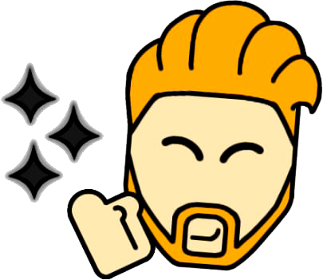
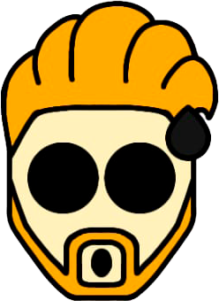
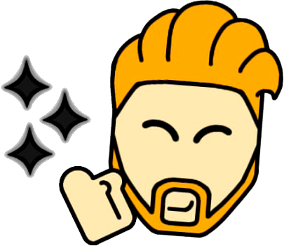
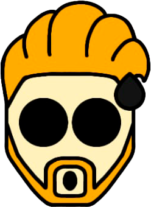

Oliver
Oliver tem 25 anos, o irmão mais velho, ele foi o primeiro a ser criado em laboratório, por não terem muitas experiencias passadas, Oliver serviu como base para todos os outros. Ele era submetido a muitos testes e era levado a beira da morte só para ter um saldo de poder, porém o que mais aumentava o seu poder, era ser exposto aos gritos de dor e agonia de seus irmãos, ainda recém-nascidos, que estavam passando por seus experimentos. Os gritos causavam tanto mal e o deixava tão devastado, que aumentava seu poder na tentativa de salva-los, mas mal sabia que estava contribuindo aos teste.
Oliver tem os poderes de buraco negro, não se sabe explicar exatamente como seus poderes funcionam, já que esses corpos celestes ainda não são muito compreendidos, mas sabe-se que Oliver tem força e controle o suficiente para conter, criar e filtar o que será absorvido pelo buraco negro, mas não para por isso, já que também viram portais de teletransporte que leva a lugares que ele já tenha visto, e por ser um artista, já imaginou e acertou como muitos outros universão são.
Atualmente, Oliver trabalha como designer em uma empresa de jogos e tenta viver uma vida normal com sua família, é o lider da casa e age como um pai para seus irmãos, tenta sempre transparecer força e confiança, porém ainda tem suas marcas e problemas, mas ir a outros universos para refletir sobre o assunto é algo bem frequente.